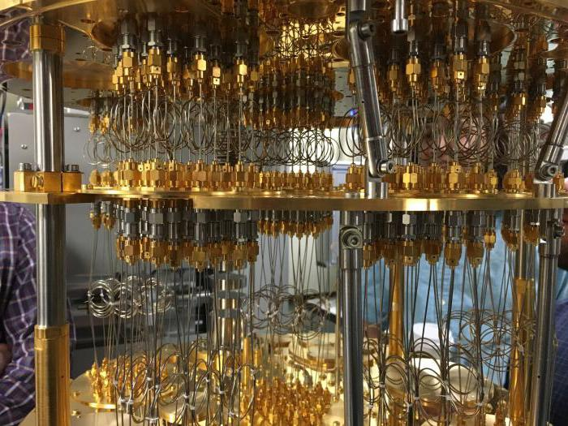
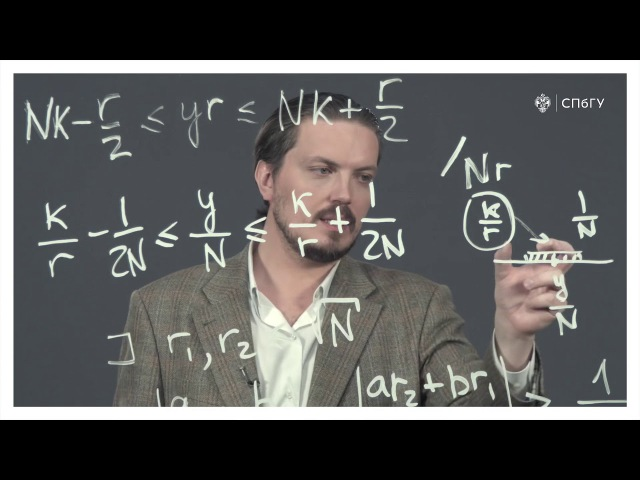
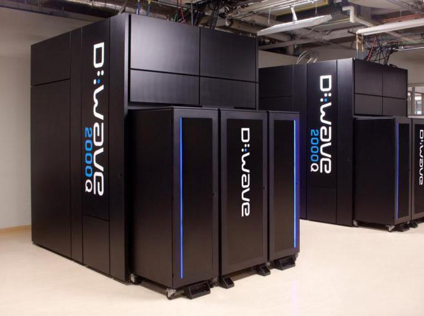

Главное понятие,которое поможет понять принцип работы квантового комьютера является
суперпозиция. Суперпозиция(простыми словами для нас) - это когда тело находиться в нескольких "состояниях" одновременно.Лучше понять это определение помогает эксперемент "Кот Шредингера".
Я надеюсь, что вы ознакомились с содржанием данного видео и имеете представление о суперпозиции. Этот принцип заложен в работе квантового компьютера.

Фото взято с сайта FB.ru
Главное отличичие квантового компьютера от обычного - это наличие
кубитов.
Кубиты - это те же самые биты, только в отличии от них кубиты могут принимать значание и 0, и 1 ОДНОВРЕМЕННО! Это свойство и делает квантовый компьютер - квантовым.
Если, скажем, 2 кубита запутаны, то это делает их совершенно коррелированными.
Процессор квантового типа может использовать логические вентили.
Т. н. вентиль Адамара, например, помещает кубит в состояние совершенной суперпозиции.
Если суперпозицию и запутанность совместить с умно расположенными квантовыми вентилями, то начинает раскрываться потенциал субатомных вычислений.
2 кубита позволяют исследовать 4 состояния: 00, 01, 10 и 11. Принцип работы квантового процессора таков, что выполнение логической операции дает возможность работать со всеми положениями сразу.
И число доступных состояний равно 2 в степени количества кубитов. Так что, если сделать 50-кубитный универсальный квантовый компьютер, то теоретически можно исследовать все 1,125 квадриллиона комбинаций одновременно.
Квантовый процессор в России видят несколько иначе. Ученые из МФТИ и Российского квантового центра создали «кудиты», представляющие собой несколько «виртуальных» кубитов с различными «энергетическими» уровнями.
Если вы не до конца поняли как работает квантовый компьютер, то предлагаю посмотреть это видео.
Фото взято с сайта Университет ИТМО
Квантовый компьютер нужен для решения задач(поиска правильного ответа).
А так как кубиты могут принимать два значения, то этот процесс ускоряется в разы!
Иногда данную концепцию объясняют на примере игры Angry Birds.
Для имитации гравитации и взаимодействия сталкивающихся объектов ЦПУ планшета использует математические уравнения. Квантовые процессоры ставят такой подход с ног на голову.
Они «бросают» несколько птиц и смотрят, что происходит.
В микрочип записывается задача: это птицы, их бросают, какова оптимальная траектория?
Затем проверяются все возможные решения или, по крайней мере, очень большое их сочетание, и выдается ответ.
В квантовом компьютере задачи решает не математик, вместо него работают законы физики.
Подключение теории информации к физике может указать путь к решению феноменально трудных(по числам) задач задач.
50-кубитовному компьютеру это по силам.
Это и есть главная причина создания квантового пк!
Фото взято с сайта FB.ru
Есть много задач, которые компьютер не в состоянии решить.
Например, шифрование. Проблема заключается в том, что не так легко найти простые множители 200-значного числа.
Даже если ноутбук работает с отличным ПО, то, возможно, придется ждать годы, чтобы найти ответ.
Поэтому еще одной вехой в квантовых вычислениях стал алгоритм, опубликованный в 1994 г. Питером Шором, теперь профессором математики в MIT.
Его метод заключается в поиске множителей большого числа с помощью квантового компьютера, которого тогда еще не существовало.
По сути, алгоритм выполняет операции, которые указывают на области с правильным ответом. В следующем году Шор открыл способ квантовой коррекции ошибок.
Тогда многие поняли, что это – альтернативный способ вычислений, который в некоторых случаях может быть более мощным.
Тогда последовал всплеск интереса со стороны физиков к созданию кубитов и логических вентилей между ними.
Алгоритм Шора не единственный, но он является основным!

Фото взято с сайта ...
Давайте посмотрим чего ученые добились за все время:
CME Group проинвестировала ванкуверскую компанию 1QB Information Technologies Inc., разрабатывающую программное обеспечение для процессоров квантового типа.
По мнению инвесторов, такие вычисления, вероятно, окажут наибольшее влияние на отрасли, которые работают с большими объемами чувствительных ко времени данных.
Примером таких потребителей являются финансовые учреждения. Goldman Sachs инвестировал в D-Wave Systems, а компания In-Q-Tel финансируется ЦРУ.
Первая производит машины, которые делают то, что называется «квантовым отжигом», т. е. решает низкоуровневые задачи оптимизации с помощью квантового процессора.
Intel тоже занимается инвестированием в данную технологию, хотя считает ее реализацию делом будущего.
Это все инвестиции, но какой квантовый компьютер является самым мощным на данный момент?
В ходе Международной квантовой конференции в Москве российский учёный Михаил Лукин представил самый мощный на сегодняшний день 51-кубитный квантовый компьютер.
Число 51 было выбрано не случайно: Google уже долгое время работает над 49-кубитным квантовым компьютером, а потому обойти конкурента было для Лукина, как для азартного учёного, делом принципа.

Фото взято с сайта FB.ru
| № | Сравнение | Обычный компьютер | Квантовый компьютер |
|---|
| 1 | Cкорость работы | 4/10 | 10/10 |
| 2 | Затраты при роизводстве | средние | огромные |
| 3 | Условия для работы | низкие | высокие |
| 4 | Мощность | 6/10 | 10/10 |
| 5 | Распространённость | 8/10 | 2/10 |
Таблица не является достоверным источником.
Идея использования квантовой механики для обработки информации уже десятки лет.
Одно из ключевых событий произошло в 1981 году, когда IBM и MIT совместно организовали конференцию по физике вычислений.
Знаменитый физик Ричард Фейнман предложил построить квантовый компьютер. По его словам, для моделирования следует воспользоваться средствами квантовой механики.
И это прекрасная задача, поскольку не выглядит такой простой. У квантового процессора принцип действия основан на нескольких странных свойствах атомов – суперпозиции и запутанности.
Частица может находиться в двух состояниях одновременно. Однако при измерении она окажется только в одном их них. И невозможно предугадать, в каком, кроме как с позиции теории вероятности.
Этот эффект лежит в основе мысленного эксперимента с котом Шредингера, который находится в коробке одновременно живым и мертвым до тех пор, пока наблюдатель украдкой туда не заглянет.
Ничто в повседневной жизни не работает подобным образом. Тем не менее, около 1 млн экспериментов, проведенных с начала ХХ века, показывают, что суперпозиция действительно существует.
На этом всё! Я надеюсь, что вам было интересно читать эту статью.